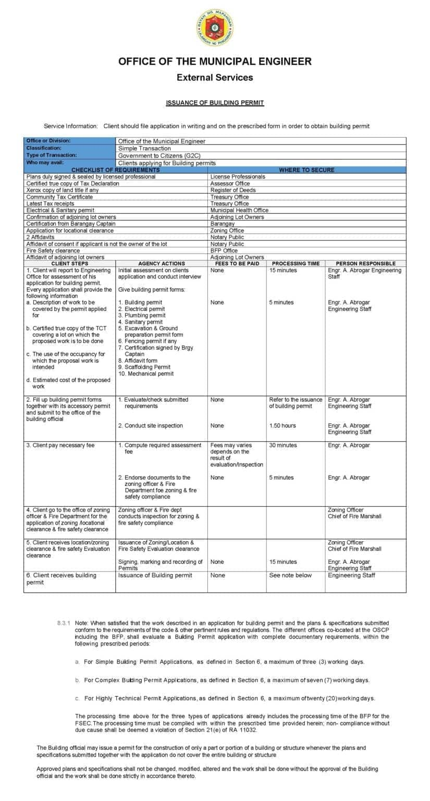

Gusali, Inhenyeriya, tan Zoning
Building Permit
Alaen sakey ya building permit manlapud say Mapandan MEO. Simple: 3 saray agew, Complex: 7 saray agew, Highly Technical: 20 saray agew per RA 11032.
Deskripsyon
Say building permit et legal a kailangan ed silong na National Building Code of the Philippines (PD 1096) parad antokaman a konstruksiyon, renovation, alteration, odino demolition na gusali odino structure. Susuriin tan ipaway na Municipal Engineering Office (MEO) na Mapandan so building permit kayari na panagseguro na pagsunod ed safety standard, zoning, tan structural requirement.
Saray Kinakailangan
- Plans duly signed & sealed nen licensed professionals
- Certified true copy of Tax Declaration (from Assessor Office)
- Xerox copy na dalin title (manlapud Manrehistro na Deeds)
- Komunidad Buis Sertipiko (manlapud Treasury Opisina)
- Latest Buis receipts (manlapud Treasury Opisina)
- Electrical & Sanitary permit (manlapud Munisipal Salun-ed Opisina)
- Confirmation na adjoining lot owners
- Certification manlapud Barangay Captain
- Aplikasyon parad locational clearance (manlapud Zoning Opisina)
- 2 Affidavits (manlapud Notary Publiko)
- Affidavit na consent no ag lot owner (manlapud Notary Publiko)
- Apoy Safety clearance (manlapud BFP Opisina)
- Affidavit na adjoining lot owners
Proseso
- Obtain sakey ya zoning clearance manlapud say MPDC / Zoning Opisina.
- Iprepara architectural tan structural plans signed nen licensed professionals.
- Ipasa amin saray dokumento pian say Munisipal Engineering Opisina (MEO) parad usisaen.
- Manbayad say building permit saray bayad ed say Munisipal Treasurer’s Opisina.
- Awat say inaprubaan building permit kalpasan technical evaluation.
Na-scan a Dokumento
Na-scan a pahina manipud ed opisyal a Mapandan Citizen’s Charter ya mangipabitar ed saray kinakailangan, bayarin, oras na panagproseso, tan responsable a staff para ed serbisyo.
